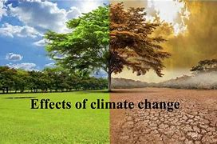
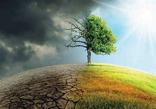
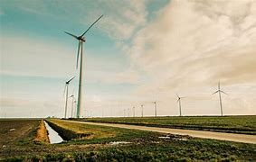
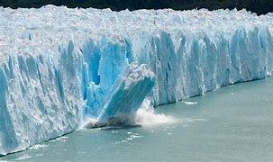

Climate change, driven primarily by human activities such as the burning of fossil fuels and deforestation, has become a defining global issue of our time. Beyond its well-documented effects on weather patterns and sea levels, climate change poses a dire threat to biodiversity. Biodiversity, the variety of life on Earth, is essential for ecosystem health and human well-being. This essay explores the multifaceted impact of climate change on biodiversity, emphasizing the need for urgent action to mitigate its consequences.
One of the most direct impacts of climate change on biodiversity is habitat loss and alteration. As temperatures rise, many species are forced to migrate or adapt to new environments to survive. This can lead to the fragmentation and destruction of their natural habitats. Species with limited ranges or specific habitat requirements are particularly vulnerable. Iconic examples include polar bears losing their sea ice hunting grounds and coral reefs suffering from bleaching due to warmer ocean temperatures.
Climate change disrupts the delicate balance of ecosystems by affecting the timing of seasonal events, such as flowering and migration. For instance, plants may bloom earlier in response to warming temperatures, but their pollinators (e.g., bees) may not adjust their schedules accordingly. This asynchrony can lead to reduced reproductive success for both plants and animals, potentially leading to declines or extinctions. The loss of keystone species can have cascading effects throughout entire ecosystems, further threatening biodiversity.
Many species are attempting to cope with changing conditions by shifting their geographical ranges. While some may successfully adapt, others face competition from invasive species that exploit the newly available niches. Invasive species can outcompete native ones, disrupt ecosystems, and exacerbate the loss of biodiversity. The displacement of native species by invasives is a growing concern as the planet warms.
Climate change represents an existential threat to biodiversity. The consequences are far-reaching, from habitat loss and altered ecosystems to invasive species and ocean acidification. The loss of biodiversity not only undermines the integrity of ecosystems but also threatens human food security, medicine, and cultural diversity. Urgent and coordinated efforts are needed to mitigate climate change, reduce greenhouse gas emissions, and protect biodiversity. This entails both global policy actions and individual responsibility. Preserving the intricate web of life on Earth is not just an ethical imperative but a crucial step toward a sustainable future for all species, including our own.
